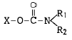
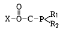
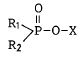
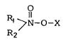

식물보호기사 (2004-09-05 기출문제)
1과목: 식물병리학
1. 지표식물에 인공 즙액을 접종한 결과로 진단할 수 있는 병은?
- 벼흰잎마름병(BLB)
- 감자 X 바이러스(PVX)
- 벼줄무늬잎마름병(RSV)
- 뽕나무오갈병(MLO)
(정답률: 53%)

2. 다음 병 중 균독소(mycotoxin) 때문에 인축(人畜)이 중독증(中毒症)을 나타내는 것은?
- 딸기균핵병
- 사과탄저병
- 벼도열병
- 맥류붉은곰팡이병
(정답률: 92%)
3. 다음 중 식물 병원세균의 속명이 아닌 것은?
- Pseudomonas 속
- Xanthomonas 속
- Ralstonia 속
- Uncinula 속
(정답률: 72%)
4. 복숭아나무잎오갈병의 약제 방제의 살포 적기는?
- 새 잎이 전개시
- 복숭아 수확시
- 개화 말기
- 이른 봄 잎이 전개되기 직전
(정답률: 76%)
5. 붕소가 모자라서 일어나는 사과병은?
- 탄저병
- 부란병
- 축과병
- 점무늬낙엽병
(정답률: 72%)
6. 현재 우리나라 벼흰잎마름병 판별품종 중 가장 널리 분포하는 레이스는?
- K1
- K2
- K3
- K4와 K5
(정답률: 42%)
7. 다음 중 병명과 능동적 저항성 기작이 잘못 짝지워진 것은?
- 벼도열병 - 규화세포
- 감귤나무수지병 - 이병조직의 콜크층
- 감자더뎅이병 - 이병감자 조직의 목전층(木栓層)
- 소나무잎떨림병 - 이병부위의 이층(離層)
(정답률: 53%)
8. 전신적 병징이 아닌 것은?
- 혹병
- 시들음병
- 오갈병
- 황화병
(정답률: 78%)
9. 식물 병원균의 생태형(race)의 존재를 인식할 수 있는 방법은?
- 병원균의 형태적 변이
- 병원균의 배양적 성질의 차이
- 판별품종에 대한 반응의 차이
- 병원균의 화학적 구성성분의 차이
(정답률: 70%)
10. 다음 중 12월 ∼ 3월 사이에 비닐 하우스 재배지 채소에서 많이 발생하는 병은?
- 모자이크병
- 더뎅이병
- 탄저병
- 균핵병
(정답률: 66%)
11. 다음 중 유성포자가 아닌 것은?
- 난포자
- 자낭포자
- 병포자
- 담자포자
(정답률: 78%)
12. 다음 중 유성세대가 없는 것은?
- 접합균문(Zygomycota)
- 자낭균문(Ascomycota)
- 불완전균문(Deuteromycota)
- 담자균문(Basidiomycota)
(정답률: 89%)
13. 만생종보다 조생종 벼가 도열병에 잘 걸리지 않는다면 그 이유는?
- 모든 조생종 품종은 수직 저항성이 있기 때문이다.
- 모든 조생종 품종은 포장 저항성이 있기 때문이다.
- 병의 회피에 의한 결과이다.
- 종자 소독을 잘 했기 때문이다.
(정답률: 54%)
14. 여름의 저온 및 장마와 밀접한 관계가 있는 병은?
- 벼이삭누룩병
- 벼키다리병
- 벼잎집얼룩병
- 벼도열병
(정답률: 84%)
15. 소나무잎마름병(Pseudocercospora)은 어떤 병징(Symptom)을 나타내는가?
- 봄에 잎 끝부분이 갈색으로 변한다.
- 봄에 잎 전체가 갑자기 갈색으로 변한다.
- 봄에 잎에 띠모양의 황색반점이 생긴다.
- 봄에 신초와 잎이 시들고 구부러진다.
(정답률: 68%)
16. 외국으로부터 들여오는 종묘의 검사는 철저할수록 좋다. 종묘검사는 식물검역소에서 주관하여 실시하는데 이와 같은 방제 방법은?
- 물리적 방제
- 경종적 방제
- 생물적 방제
- 법적 방제
(정답률: 91%)
17. 맥류의 흰가루병균의 월동 형태는?
- 후막포자
- 휴면포자
- 난포자
- 자낭포자
(정답률: 68%)
18. 대추나무빗자루병은 어떻게 전염되는가?
- 파이토플라스마 병원체가 비산하여 병을 전염한다.
- 매개충인 마름무늬매미충에 의하여 병원체가 전염된다.
- 병원체가 하늘소에 의하여 전염된다.
- 인위적인 잘못으로 다른 대추나무로 전염된다.
(정답률: 70%)
19. 아플라톡신(aflatoxin) 균독소(mycotoxin)를 생산하는 균은?
- Aspergillus flavus
- Aspergillus ochraceus
- Penicillium citrinum
- Fusarium graminearum
(정답률: 61%)
20. 오존(O3)에 의한 식물 피해의 표징으로서 맞는 것은?
- 잎의 적변
- 잎가 마름
- 줄기 괴저
- 표징 없음
(정답률: 63%)
2과목: 농림해충학
21. 다음 해충 중 종실(종자, 구과)을 가해하지 않는 해충은?
- 밤바구미
- 복숭아명나방
- 버들바구미
- 도토리거위벌레
(정답률: 59%)
22. 콩의 어린 꼬투리에 유충이 먹어 들어가 여물지 않은 종실을 갉아 먹는 해충은?
- 콩나방
- 콩잎말이명나방
- 검은무늬밤나방
- 완두굴파리
(정답률: 60%)
23. 유약 호르몬(Juvenile hormone)의 분비기관은?
- 카디아카체
- 알라타체
- 앞가슴샘
- 신경분비세포
(정답률: 77%)
24. 1년에 1회 발생하는 해충은?
- 밤나방
- 조명나방
- 감자나방
- 미국흰불나방
(정답률: 41%)
25. 애멸구와 줄무늬잎마름병과의 관계가 잘못 설명된 것은?
- 보독은 흡즙으로 하게 된다.
- 보독충의 알에도 바이러스 병원균은 있다.
- 보독 직후에는 병이 전염되지 않는다.
- 바이러스는 애멸구 체내에서는 증식이 안 된다.
(정답률: 68%)
26. 곤충 생장조절제의 이용에 관하여 잘못 설명한 것은?
- 곤충류에만 특이하게 작용한다.
- 생물적 농축현상이 없다.
- 잔효성이 길다.
- 부작용이 적다.
(정답률: 54%)
27. 앞날개가 경화되어 시초로 변해있는 해충은?
- 벼메뚜기
- 참검정풍뎅이
- 땅강아지
- 뿔밀깍지벌레
(정답률: 59%)
28. 표피를 형성하는 단백질, 지질, 키틴화합물 등을 합성 하고 분비해 주는 한 층의 세포군은 다음 중 어느것인가?
- 납층
- 시멘트층
- 기저막
- 진피세포
(정답률: 72%)
29. 다음 해충밀도 조사법 중 절대밀도 조사법에 이용될 수 있는 것은?
- 페로몬트랩
- 유아등
- 황색수반
- 동력흡충기
(정답률: 40%)
30. 곤충의 선천적 행동에 해당되지 않는 것은?
- 정위
- 조건화
- 반사
- 고정행위
(정답률: 75%)
31. 곤충의 다리 마디는 몸쪽에서부터 다음 어느 것이 순서대로 되어 있는가?
- 밑마디-넓적마디-발마디-종아리마디-도래마디
- 밑마디-발마디-종아리마디-도래마디-넓적마디
- 밑마디-도래마디-넓적마디-종아리마디-발마디
- 밑마디-종아리마디-발마디-넓적마디-도래마디
(정답률: 93%)
32. 수정된 난핵(卵核)이 분열하여 각각의 개체로 발육하는 것으로 하나의 수정란에서 여러 개의 개체가 나오는 것을 무엇이라고 하는가?
- 양성생식(兩性生殖)
- 유생생식(幼生生殖)
- 단위생식(單爲生殖)
- 다배생식(多胚生殖)
(정답률: 72%)
33. 솔잎혹파리에 대한 기술이다. 분류 및 형태적으로 맞지 않는 것은?
- 학명은 Dryocosmus kuriphilus 이다.
- 파리목 혹파리과에 속한다.
- 성충의 크기는 1.7-2.0mm이다.
- 알은 긴타원형이며 담황색이다.
(정답률: 56%)
34. 점박이응애에 대한 설명 중 틀린 것은?
- 곤충에 속한다.
- 과수의 주요해충이다.
- 숙주식물의 잎에서 즙액을 빨아 먹는다.
- 성충으로 월동한다.
(정답률: 53%)
35. 곤충의 뇌 중에서 가장 크고 복잡하며, 광(光) 감각을 받아들이며 중앙신경분비세포군을 거느리는 것은?
- 전대뇌
- 중대뇌
- 후대뇌
- 원시뇌
(정답률: 68%)
36. 이화명나방의 설명 중 틀린 것은?
- 연 2회 발생한다.
- 월동상태는 노숙유충으로 볏짚속에 월동한다.
- 유충은 벼의 뿌리를 가해한다.
- 2화기 피해경은 출수 후 백수가 된다.
(정답률: 46%)
37. 곤충의 방어물질의 종류로 설명이 잘못된 것은?
- 곤충의 방어샘에서 동정된 화합물로는 알칼로이드, 테로페노이드, 퀴논, 페놀 등이 있다.
- 사회성 곤충에서는 독샘에서 분비하는 방어물질들이 대부분 효소들이다.
- 곤충의 방어물질을 총칭 카이로몬이라고 한다.
- 비사회성 곤충에서는 방어물질 중에 개미들의 경보 페로몬과 같거나 비슷한 구조의 화합물도 있다.
(정답률: 61%)
38. 해충방제의 개념상 경제적 가해수준이란?
- 경제적 피해가 나타나는 최고밀도
- 직접 방제수단을 써야 하는 밀도수준
- 일반적인 환경조건하에서의 평균밀도
- 일반적인 피해가 나타나는 최저밀도
(정답률: 39%)
39. 다음 밀도 의존적 치사요인에 대한 설명 중 옳은 것은?
- 사망율은 밀도에 비례한다.
- 사망수는 밀도에 비례한다.
- 사망율은 밀도에 반비례한다.
- 사망수는 밀도에 반비례한다.
(정답률: 55%)
40. 해충방제를 계획할 때 지켜야 할 사항 중 가장 불합리한 것은?
- 방제력만을 꼭 따라야 한다.
- 해충의 종을 확인한다.
- 농약을 선택적으로 쓴다.
- 해충의 밀도를 조사한다.
(정답률: 78%)
3과목: 재배학원론
41. 열해(熱害)의 원인으로 적절하지 않은 것은?
- 증산과다
- 철분의 침전
- 암모니아 축적
- 유기물의 과잉집적
(정답률: 48%)
42. 찰벼에 메벼의 화분을 수분하면 그 F1이 메벼로 보이는 현상은?
- Xenia
- Apomixis
- Pseudogamy
- Chimera
(정답률: 57%)
43. 적산온도가 가장 낮은 여름작물은?
- 메밀
- 조
- 담배
- 콩
(정답률: 65%)
44. 계통육종법에서 개체선발은 보통 몇 세대까지 수행해야 되는가?
- F1-F2 세대
- F3-F4 세대
- F4-F5 세대
- F5-F6 세대
(정답률: 45%)
45. 다음 재배적 특성 중 벼 저온스트레스와 관련이 있는 것은?
- 내냉성(耐冷性)
- 내한성(耐寒性)
- 내동성(耐凍性)
- 내건성(耐乾性)
(정답률: 32%)
46. 벼의 일생 중 가뭄, 침관수, 저온 등의 불량환경 조건에 대해 가장 민감한 장해현상을 보이는 생육시기는?
- 못자리시기
- 이앙기
- 분얼성기
- 감수분열기
(정답률: 71%)
47. 벼의 키다리병에서 유래한 생장조절 물질은?
- 지베렐린
- 오옥신
- 사이토카이닌
- 에스렐
(정답률: 83%)
48. 작물의 동상해대책이 아닌 것은?
- 배수를 하여 생육을 건실하게 한다.
- 칼리 비료 시용량을 높힌다.
- 퇴비 시용량을 높힌다.
- 뿌림골을 얕게 한다.
(정답률: 76%)
49. 엽면시비의 잇점이 아닌 것은?
- 미량 요소의 공급
- 급속한 영양 회복
- 비료분의 유실 방지
- 개화 촉진
(정답률: 54%)
50. 고구마를 인위적으로 개화시키려고 할 경우 가장 알맞은 것은?
- 접목 후 단일처리한다.
- 접목 후 장일처리한다.
- 휴면타파 후 단일처리한다.
- 휴면타파 후 장일처리한다.
(정답률: 56%)
51. 여교잡이 성공적으로 될 수 있는 경우는?
- 불량반복친에 우량한 형질을 옮길 경우
- 단순반복친에 우량한 형질을 옮길 경우
- 우량반복친에 간단한 형질을 옮길 경우
- 복잡반복친에 단순한 형질을 옮길 경우
(정답률: 57%)
52. 자식계통의 내병성, 조숙성을 개량하려고 할 경우 가장 적절한 방법은?
- (A X B) X B
- (A X B) X C
- (A X B) X (C X D)
- (A X B) X (C X D) X (D X E)
(정답률: 58%)
53. 종자의 저장법으로 가장 부적당한 것은?
- 고온저장
- 저온저장
- 건조저장
- 밀폐저장
(정답률: 88%)
54. 작물의 수량을 가장 많이 낼 수 있는 3대 조건은?
- 자본, 환경, 유전성
- 유전성, 재배기술, 노력
- 유전성, 환경, 재배기술
- 자본, 환경, 노력
(정답률: 87%)
55. 작물의 요수량(要水量)이 가장 적은 작물은?
- 호박
- 완두
- 감자
- 수수
(정답률: 80%)
56. 벼의 수해(水害)에 관한 설명 중 옳지 않은 것은?
- 분얼초기에는 침수에 약하다.
- 수온이 높으면 침수 피해가 크다.
- 수잉기부터 출수개화기사이에는 침수에 극히 약하다.
- 침수로 표토가 씻겨내렸을 때에는 새 뿌리의 발생 후에 추비를 준다.
(정답률: 42%)
57. 작물의 종자 퇴화에 대해 잘못 기술한 것은?
- 세대가 경과하면서 자연교잡, 돌연변이 등에 의하여 퇴화한다.
- 옥수수는 자식열세현상이 강하므로 타가수정으로 종자를 생산한다.
- 씨감자는 평야지에서 생산하는 것이 좋다.
- 수확할 때 이형 종자의 혼입은 퇴화의 원인이 된다.
(정답률: 78%)
58. 맥류의 내동성과 연관된 형태적 특성이 아닌 것은?
- 포복성인 것이 내동성이 강하다.
- 중경(중배축)이 신장되는 것이 내동성이 강하다.
- 엽색이 짙은 것이 내동성이 강하다.
- 생장점이 낮게 위치한 것이 내동성이 강하다.
(정답률: 44%)
59. 토양에 통기조직을 좋게 하는 방법이 아닌 것은?
- 배수를 좋게 한다.
- 심경을 한다.
- 김매기를 한다.
- 과습한 땅에서는 이랑을 높이지 않고 재배한다.
(정답률: 50%)
60. 연작의 해가 가장 적은 작물은?
- 고구마
- 수박
- 토마토
- 인삼
(정답률: 69%)
4과목: 농약학
61. 석회유황 합제의 가장 주된 유효성분은?
- CaS
- CaS2O3
- CaSO4
- CaS5
(정답률: 55%)
62. 다음 중 사과의 탄저병약 등으로 쓰이는 가벤다수화제, 지오판수화제는 어느 계통에 속하는가?
- 카바메이트계
- 페닐아마이드계
- 페녹시계
- 트리아진계
(정답률: 33%)
63. 다음 중 농약의 보조제가 아닌 것은?
- 증량제
- 유인제
- 용제
- 협력제
(정답률: 48%)
64. 유기비소제의 일반식이 R· As· X2로 표시될 때 R이 지방 족일 경우 가장 살균력이 큰 것은?
- -CH3
- -C2H5
- -C3H7
- -C4H9
(정답률: 63%)
65. 분제(粉劑)의 물리적 성질인 토분성에 대한 설명을 옳게 기술한 것은?
- 분제를 살포하였을 때 광범위하게 그리고 균일하게 흩어지는 성질을 말한다.
- 살분시 분제의 입자가 풍압에 의하여 목적하는 장소까지 날아가는 성질을 말한다.
- 살분시 분제의 입자가 살분기의 분출구로 잘 미끄러져 가는 성질을 말한다.
- 분제농약의 저장시 주성분의 분해 및 응집 등 물리적 변화가 일어나지 않은 성질을 말한다.
(정답률: 57%)
66. 유제의 물리성 중 가장 중요한 것은?
- 수화성
- 유화성
- 수용성
- 친수성
(정답률: 72%)
67. 다음 농약중 도열병에 효과가 없는 농약은?
- 아이비유제(키타진)
- 베나솔입제(오리자)
- 부라딘액제(부라에스)
- 메프유제(스미치온)
(정답률: 42%)
68. 유기인제의 살충작용은 어느 것에 의하는가?
- acetylcholine esterase의 작용저해
- cytochromeoxidase의 작용저해
- cynapse 전막 저해
- 신경의 이상흥분 억제
(정답률: 62%)
69. 다음 중 약해의 원인이 아닌 것은?
- 농약제제에 불순물의 혼입
- 표준 사용량보다 적게 사용
- 원제 부성분에 의한 이상발생
- 동시사용으로 인한 약해
(정답률: 82%)
70. 농약관리법에 의한 맹독성의 판정기준은?
- 쥐에 대한 경구독성이 고체는 5㎎/㎏, 액체는 20㎎/㎏ 미만
- 쥐에 대한 경구독성이 고체는 5㎎/㎏, 액체는 40㎎/㎏ 미만
- 쥐에 대한 경구독성이 고체는 10㎎/㎏, 액체는 50㎎/㎏ 미만
- 쥐에 대한 경구독성이 고체는 10㎎/㎏, 액체는 100㎎/㎏ 미만
(정답률: 69%)
71. 다음 설명 중 옳지 않은 것은?
- 작물잔류성농약이란 농약의 성분이 수확물 중에 잔류하여 농약잔류허용기준에 해당할 우려가 있는 농약을 말한다.
- 안전계수란 사람이 하루에 섭취할 수 있는 약의 량을 말한다.
- 작물 체내의 잔류농약은 경시적으로 계속하여 감소한다.
- 농약의 작물잔류는 사용횟수와 제제형태에 따라서 다르다.
(정답률: 71%)
72. 식물 생육단계 중 약해의 염려가 없는 시기는?
- 휴면기
- 영양생장기
- 생식생장기
- 개화기
(정답률: 92%)
73. 제형별 농약제제 방법에 대한 설명으로 옳지 않은 것은?
- 유제 : 농약의 원제를 용제에 녹여 계면활성제를 유화제로 첨가하여 제제한 것이다.
- 수화제 : 원제가 고체인 경우에는 화이트카본을 첨가하여 혼합, 분쇄하여 제제한 것이다.
- 분제 : 원제를 증량제, 물리성개량제, 분해방지제 등과 균일하게 혼합, 분쇄하여 제제한 것이다.
- 피복식입제 : 규사, 탄산석회, 모래 등 비흡유성의 입상담체를 중심핵으로 액체의 원제를 분무하여 입상의 분무핵에 피복시키는 방법이다.
(정답률: 62%)
74. 카바메이트계 살충제의 일반식은?




(정답률: 46%)
75. 수화제 농약을 물에 희석하였을 때 고체상의 입자가 용액 중에 균일하게 분산되는 성질을 무엇이라 하는가?
- 수화성
- 수용성
- 유화성
- 현수성
(정답률: 75%)
76. 다음 주성분 조성에 따른 분류에서 같은 계통의 연결이 아닌 것은?
- 유기인계 - 아이비
- 유기염소계 - 라브사이드
- 피라졸계 - 테부펜피라드
- 유기비소계 - 에디펜
(정답률: 32%)
77. 진딧물에 대하여 살충력이 가장 강한 니코틴류는?
- ℓ -β - nicotine
- ℓ -β - nornicotine
- dℓ -β - nicotine
- ℓ -β - anabasine
(정답률: 50%)
78. 비교적 지효성이고 화학적인 안정성이 크며 약효기간이 긴 특성을 가지고 있는 유기인계 살충제는?
- Phosphate형
- Thiophosphate형
- Dithiophosphate형
- Phosphonate형
(정답률: 61%)
79. 일반식 ROSO3Na 로 표시되며 기포력, 침윤력, 세척력이 크고 물속에서 가수분해되지 않는 보조제는?
- 지방알콜황산에스테르
- 황산화유
- 설폰산염
- 지방산에스테르
(정답률: 25%)
80. 다음 중 농약의 저항성 발달 정도를 표현하는 저항성계수로서 옳은 것은?
- 저항성 LD50 / 감수성 LD50
- 감수성 LD50 × 저항성 LD50
- 감수성 LD50 / 복합저항성 LD50
- 감수성 LD50 × 복합저항성 LD50
(정답률: 68%)
5과목: 잡초방제학
81. 다음 잡초 중 초장의 크기가 작은 잡초로 구성된 것은?
- 가막사리, 망초
- 어저귀, 방동사니
- 환삼덩쿨, 강아지풀
- 올미, 괭이밥
(정답률: 47%)
82. 잡초방제 방법 중 생태적 방제법이 아닌 것은?
- 작부체계
- 답전윤환재배
- 논 오리방사
- 경합능력이 큰 품종선택
(정답률: 60%)
83. 비선택적으로 식물을 전멸시키는 제초제는?
- Bentazon
- Simazine
- Glyphosate
- 2,4-D
(정답률: 68%)
84. 작물과 잡초간의 경합에 관여되는 주요한 요인이 아닌것은?
- 광의 경합
- 수분의 경합
- 영양분의 경합
- 제초제 내성
(정답률: 83%)
85. 어떤 잡초를 분류하고자 할 때 식물분류학적 분류 순서로 올바른 것은?
- 강(綱)→ 문(門)→ 목(目)→ 과(科)→ 속(屬)→ 종(種)
- 문(門)→ 강(綱)→ 목(目)→ 과(科)→ 속(屬)→ 종(種)
- 속(屬)→ 종(種)→ 과(科)→ 목(目)→ 강(綱)→ 문(門)
- 목(目)→ 문(門)→ 강(綱)→ 속(屬)→ 과(科)→ 종(種)
(정답률: 71%)
86. 다음 환경요인 중 다년생잡초의 지하경 형성에 가장 크게 영향을 미치는 요인은?
- 온도
- 일장
- 산소
- 습도
(정답률: 58%)
87. 제초제의 선택성 발현에 영향을 미치는 요인이 아닌것은?
- 작물과 잡초의 생육정도 차이
- 작물과 잡초의 생육공간 차이
- 작물과 잡초의 제초제 흡수력 차이
- 작물과 잡초의 양분 흡수력 차이
(정답률: 16%)
88. 잡초의 발아와 출현 특성으로 잘못된 것은?
- 모든 잡초는 토양이 약알칼리성이며 비옥도가 낮아야 출현이 잘 된다.
- 잡초 발생시 중점토보다 사질토에서 발생 심도가 깊다.
- 출현의 최적온도와 발아온도와는 큰 차이가 없이 대체로 같다.
- 잡초는 일반적으로 종자가 클수록 출아심도가 깊다.
(정답률: 62%)
89. 방동사니류 잡초의 형태적 특징은?
- 줄기의 모양이 삼각기둥으로 형성되어 있다.
- 잎이 크고 그물처럼 되어 있다.
- 일정한 모양을 갖고 있지 않은 것이 특징이다.
- 줄기의 모양이 원통형으로 형성된 것이 특징이다.
(정답률: 68%)
90. 잡초가 작물과의 경합에서 유리한 생태적 특성이 아닌것은?
- 초기 생장속도가 빠르다.
- 건물 생산이 매우 높다.
- 번식력이 매우 왕성하다.
- 대부분 C3 식물이다
(정답률: 75%)
91. 제초제의 토양 중에서 흡착에 관여하는 인자들 중 가장 크게 작용하는 인자는?
- 부식(humus)함량
- 모래함량
- Kaolin 함량
- 토양 pH
(정답률: 50%)
92. 논에서 다년생 잡초의 발생이 증가하는 원인이 아닌것은?
- 1년생 제초제 연용
- 추경 및 춘경 감소
- 답전윤환의 증가
- 손제초의 감소
(정답률: 63%)
93. 다음 관계가 잘못된 것은?
- 강피 - 논잡초 - 화본과잡초
- 올방개 - 밭잡초 - 광엽잡초
- 물달개비 - 논잡초 - 광엽잡초
- 자귀풀 - 논잡초 - 광엽잡초
(정답률: 72%)
94. 광발아(光發芽)잡초로만 짝지어 있는 것은?
- 바랭이, 냉이, 별꽃
- 왕바랭이, 별꽃, 소리쟁이
- 바랭이, 쇠비름, 개비름
- 향부자, 독말풀, 별꽃
(정답률: 69%)
95. 생물학적 잡초방제법의 장점은?
- 살초작용이 빠르다.
- 일정한 지역에 처리가 가능하다.
- 환경에 잔류가 없다.
- 천적 발견이 쉽다.
(정답률: 79%)
96. 잡초에 대한 작물의 경합력을 높이는 방법은?
- 만생종을 재배한다.
- 재식밀도를 낮춘다.
- 직파재배를 한다.
- 이식재배를 한다.
(정답률: 73%)
97. 경엽처리형 제초제로 잡초 발생후에 처리하는 페녹시계 제초제는?
- 2,4-D(이사디)
- Simazine(시마진)
- Butachlor(마세트)
- Alachlor(알라)
(정답률: 72%)
98. 피와 벼간의 경합처럼 이종 식물체간의 경합을 무엇이라 하는가?
- 종간경합
- 종내경합
- 속간경합
- 과간경합
(정답률: 84%)
99. 물리적 잡초방제법이 아닌 것은?
- 경운
- 예취
- 열처리
- 작부체계
(정답률: 64%)
100. 20%의 유효성분을 가진 제초제를 10a당 500mL 처리코자 할 때 10a에 필요한 제품량은?
- 500mL
- 1000mL
- 1500mL
- 2500mL
(정답률: 43%)